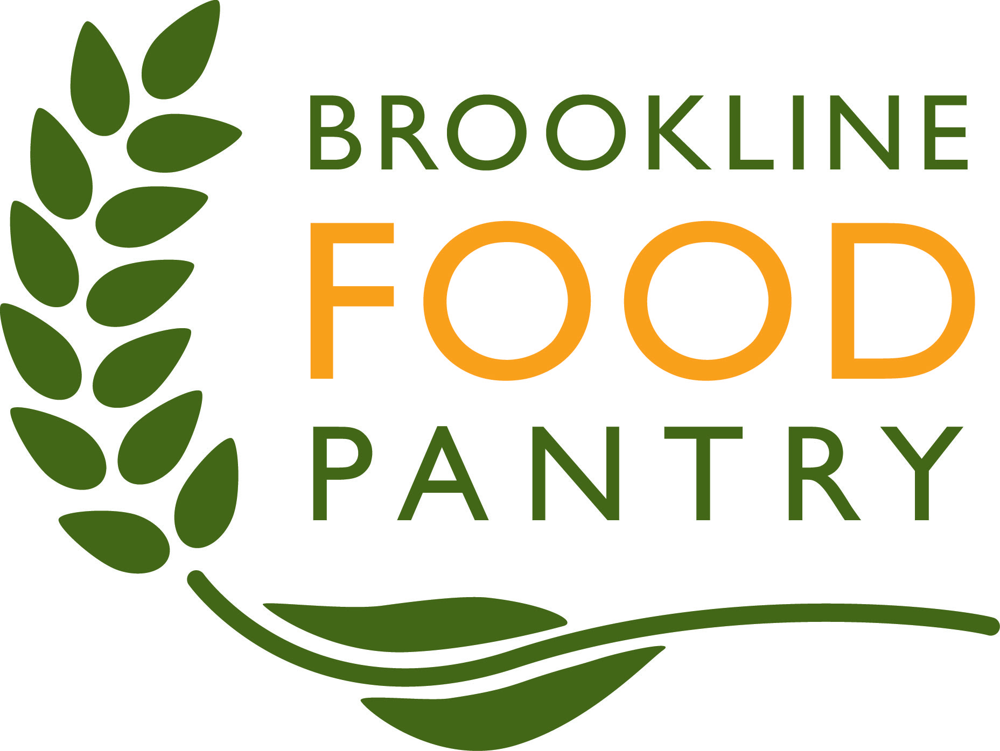

- Volunteer | Chinatown Main Street
Packed and carried groceries to be sold every other Saturday
- Student Praefect | Boston Latin School Praefecting
Helped school faculty with any administrative tasks during study periods
- Volunteer | Brookline Food Pantry
Packing and carrying groceries in a food pantry every Friday